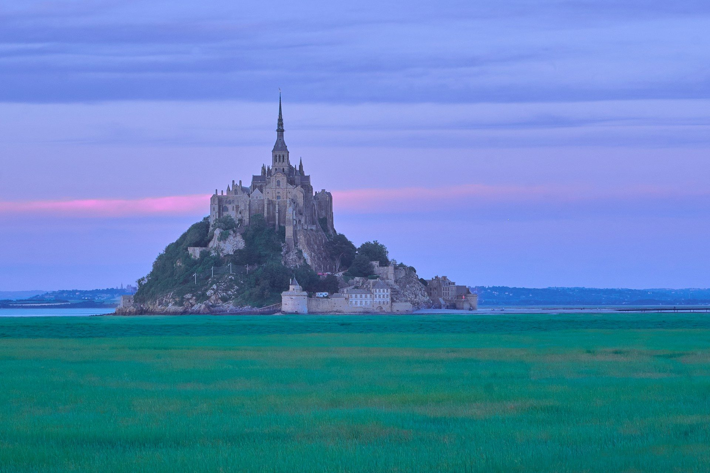

Visiter la Normandie
Le Mont-Saint-Michel, les falaises d’Étretat, le port de Honfleur et les plages du 6 juin 1944 : la Normandie est la grande escapade à quelques heures de Paris.
Photo : Alexander Van Steenberge / Unsplash
La Normandie concentre quelques-uns des sites les plus visités de France : le Mont-Saint-Michel, les falaises de craie d’Étretat, le Vieux Bassin de Honfleur et les plages du Débarquement. Rouen, sa capitale, est à 1 h 20 de Paris en train.
La région se visite toute l’année. L’hiver est la saison idéale pour éviter la foule au Mont-Saint-Michel, et Rouen accueille un marché de Noël au pied de sa cathédrale. Chaque guide donne les horaires, les prix 2026, l’accès et nos conseils.
Que voir en Normandie
-
 Mont-Saint-Michel
Mont-Saint-MichelL’abbaye perchée sur son îlot, le village médiéval et les grandes marées de la baie.
-
 Étretat
ÉtretatLa Porte d’Aval, l’Aiguille et les sentiers sur les falaises de craie de la Côte d’Albâtre.
-
 Honfleur
HonfleurLe Vieux Bassin, la plus grande église en bois de France et le port qui a inspiré Monet.
-
 Plages du Débarquement
Plages du DébarquementOmaha Beach, la Pointe du Hoc et le cimetière américain, les lieux du 6 juin 1944.
-
 Rouen
RouenLa cathédrale de Monet, le Gros-Horloge et le marché de Noël, à 1 h 20 de Paris en train.